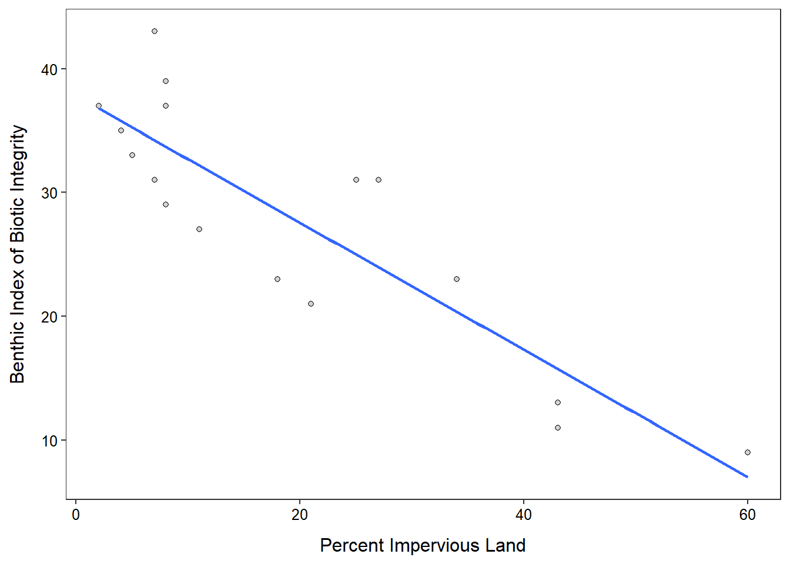
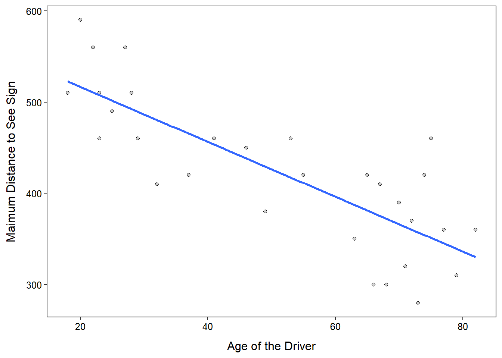

## Warning: package 'knitr' was built under R version 4.0.3> d <- read.csv("IBI.csv")> ( lm1 <- lm(IBI~imp,data=d) )Coefficients:
(Intercept) imp
37.8242 -0.5136 > rSquared(lm1)[1] 0.7632712> ggplot(data=d,mapping=aes(x=imp,y=IBI)) +
geom_point(pch=21,color="black",fill="lightgray") +
labs(x="Percent Impervious Land",y="Benthic Index of Biotic Integrity") +
geom_smooth(method="lm",se=FALSE) +
theme_NCStats()`geom_smooth()` using formula 'y ~ x'
> d <- read.csv("vision.csv")> ( lm1 <- lm(distance~age,data=d) )Coefficients:
(Intercept) age
576.682 -3.007 > rSquared(lm1)[1] 0.641993> ggplot(data=d,mapping=aes(x=age,y=distance)) +
geom_point(pch=21,color="black",fill="lightgray") +
labs(x="Age of the Driver",y="Maimum Distance to See Sign") +
geom_smooth(method="lm",se=FALSE) +
theme_NCStats()`geom_smooth()` using formula 'y ~ x'